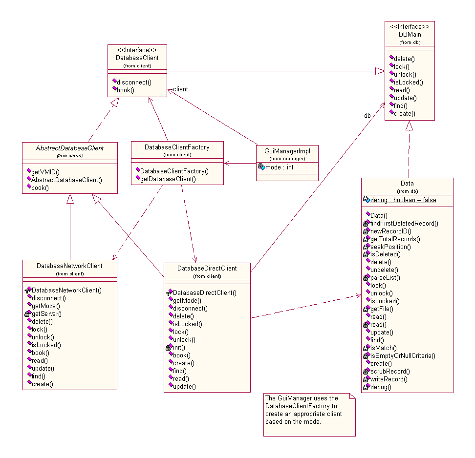
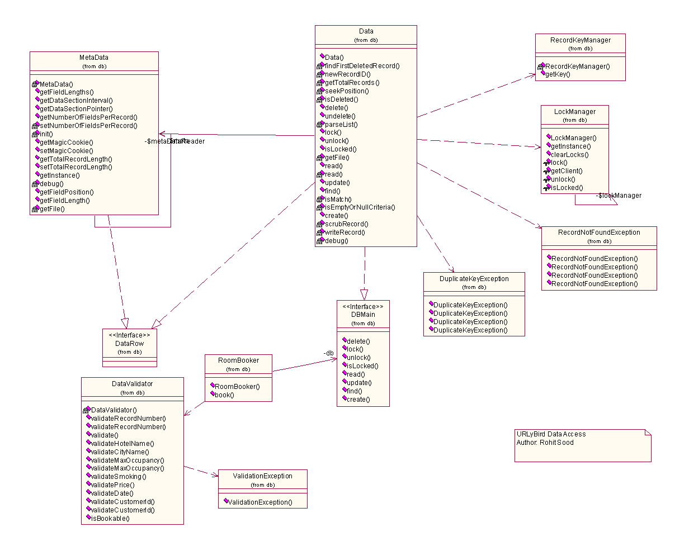
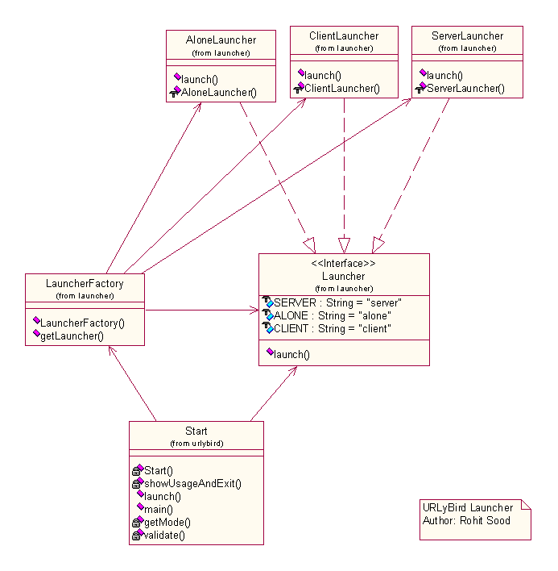
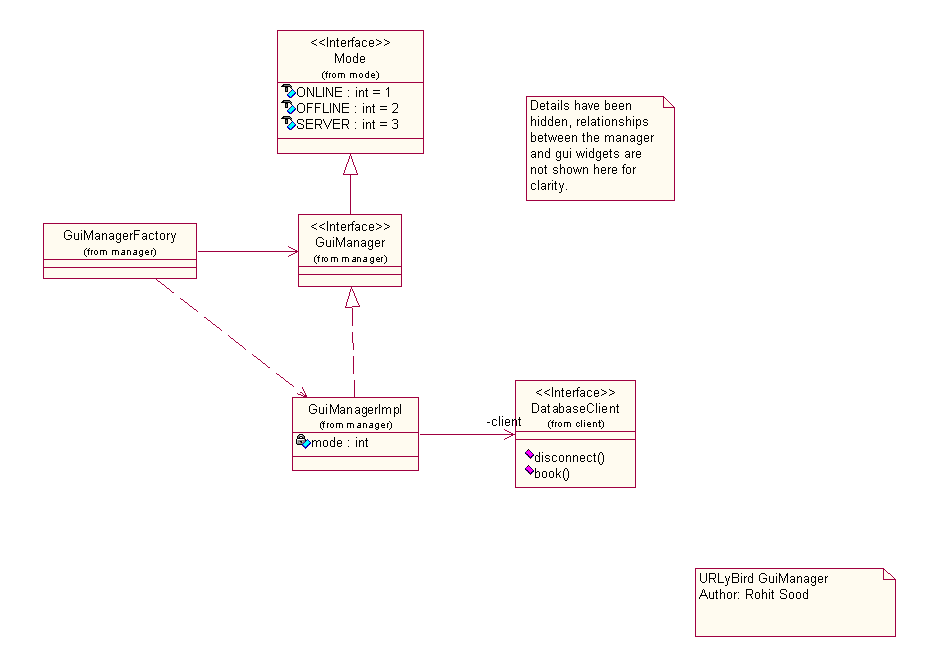
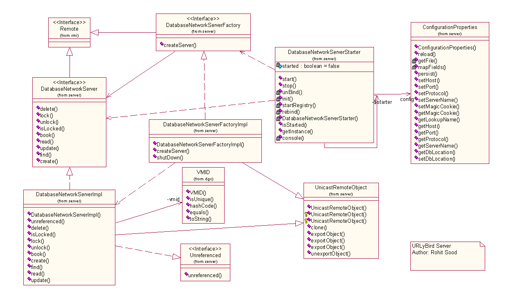

Design Documentation
This document consists of class diagrams of various sub-systems within
the application.
1. The URLyBird Client Layer

2. URLyBird Data Access Layer

3. URLyBird Launcher Layer

4. URLyBird GUIManager

5. URLyBird Server Layer
